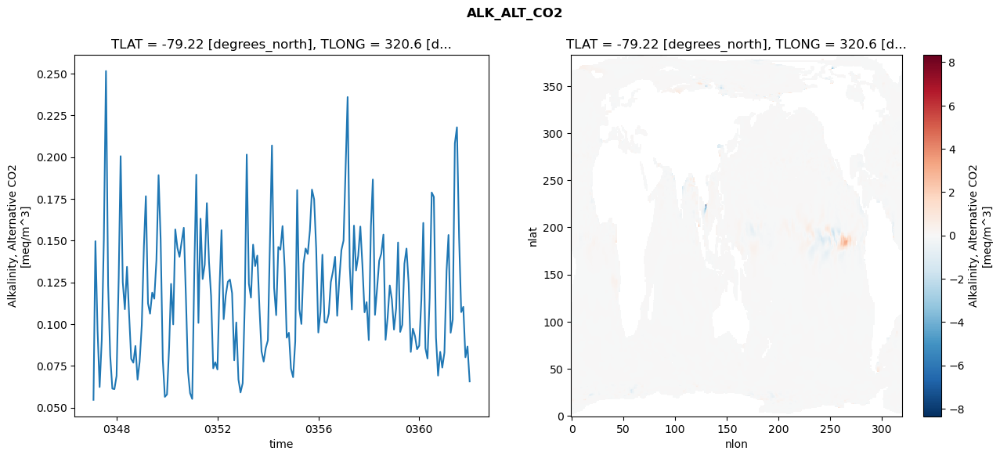
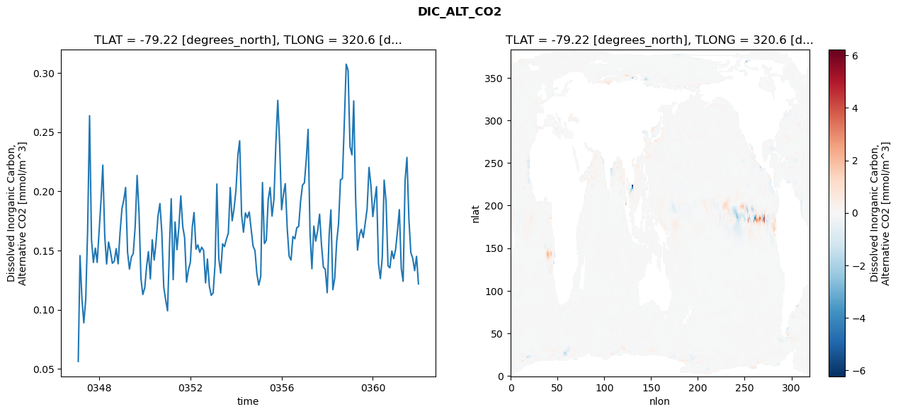
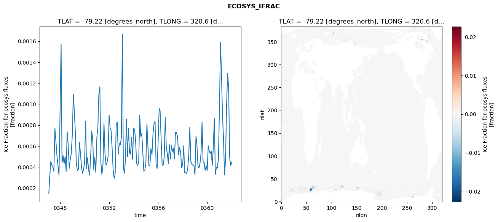
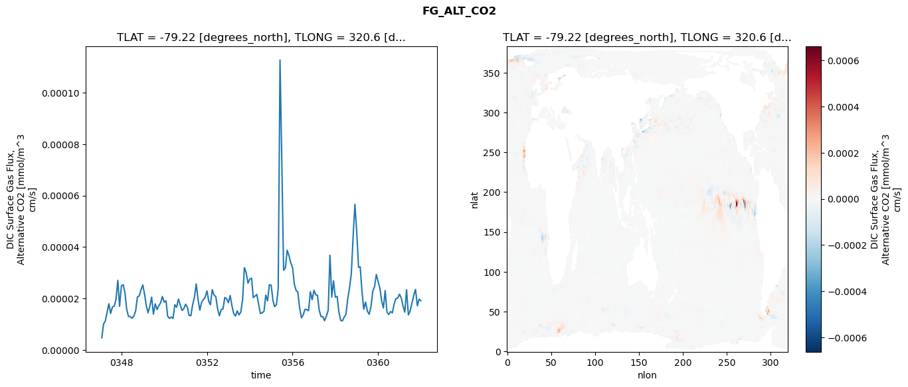

glb-dor_North_Atlantic_basin_027_1999-01-01_00108#
Simulation details#
Case: smyle.cdr-atlas-v0.glb-dor_North_Atlantic_basin_027_1999-01-01_00108.001
Basin: North_Atlantic_basin
Polygon: 27.0
Start date: 1999-01
Show code cell source Hide code cell source
import xarray as xr
import matplotlib.pyplot as plt
Show code cell source Hide code cell source
zarr_store = "/path/to/zarr/store"
# Parameters
zarr_store = "/global/cfs/projectdirs/m4746/Projects/Ocean-CDR-Atlas-v0/data/validation/smyle.cdr-atlas-v0.glb-dor_North_Atlantic_basin_027_1999-01-01_00108.001.validation.zarr"
Show code cell source Hide code cell source
%%time
ds_o = xr.open_zarr(zarr_store).compute()
ds_o
CPU times: user 625 ms, sys: 468 ms, total: 1.09 s
Wall time: 1.29 s
<xarray.Dataset> Size: 2MB
Dimensions: (nlat: 384, nlon: 320, time: 180)
Coordinates:
TLAT float64 8B -79.22
TLONG float64 8B 320.6
ULAT float64 8B -78.95
ULONG float64 8B 321.1
* time (time) object 1kB 0347-02-01 00:00:00 ... 0362-01-01 0...
z_t float32 4B 500.0
Dimensions without coordinates: nlat, nlon
Data variables:
ALK_ALT_CO2_diff (nlat, nlon) float32 492kB nan nan nan ... nan nan nan
ALK_ALT_CO2_rmse (time) float64 1kB 0.05467 0.1497 ... 0.0866 0.06571
DIC_ALT_CO2_diff (nlat, nlon) float32 492kB nan nan nan ... nan nan nan
DIC_ALT_CO2_rmse (time) float64 1kB 0.05634 0.1457 0.109 ... 0.1451 0.1219
ECOSYS_IFRAC_diff (nlat, nlon) float32 492kB nan nan nan ... nan nan nan
ECOSYS_IFRAC_rmse (time) float64 1kB 0.0001442 0.0003143 ... 0.0004431
FG_ALT_CO2_diff (nlat, nlon) float32 492kB nan nan nan ... nan nan nan
FG_ALT_CO2_rmse (time) float64 1kB 4.723e-06 1.006e-05 ... 1.913e-05xarray.Dataset
- nlat: 384
- nlon: 320
- time: 180
- TLAT()float64-79.22
- long_name :
- array of t-grid latitudes
- units :
- degrees_north
array(-79.22052261)
- TLONG()float64320.6
- long_name :
- array of t-grid longitudes
- units :
- degrees_east
array(320.56250892)
- ULAT()float64-78.95
- long_name :
- array of u-grid latitudes
- units :
- degrees_north
array(-78.95289509)
- ULONG()float64321.1
- long_name :
- array of u-grid longitudes
- units :
- degrees_east
array(321.12500894)
- time(time)object0347-02-01 00:00:00 ... 0362-01-...
- bounds :
- time_bound
- long_name :
- time
array([cftime.DatetimeNoLeap(347, 2, 1, 0, 0, 0, 0, has_year_zero=True), cftime.DatetimeNoLeap(347, 3, 1, 0, 0, 0, 0, has_year_zero=True), cftime.DatetimeNoLeap(347, 4, 1, 0, 0, 0, 0, has_year_zero=True), cftime.DatetimeNoLeap(347, 5, 1, 0, 0, 0, 0, has_year_zero=True), cftime.DatetimeNoLeap(347, 6, 1, 0, 0, 0, 0, has_year_zero=True), cftime.DatetimeNoLeap(347, 7, 1, 0, 0, 0, 0, has_year_zero=True), cftime.DatetimeNoLeap(347, 8, 1, 0, 0, 0, 0, has_year_zero=True), cftime.DatetimeNoLeap(347, 9, 1, 0, 0, 0, 0, has_year_zero=True), cftime.DatetimeNoLeap(347, 10, 1, 0, 0, 0, 0, has_year_zero=True), cftime.DatetimeNoLeap(347, 11, 1, 0, 0, 0, 0, has_year_zero=True), cftime.DatetimeNoLeap(347, 12, 1, 0, 0, 0, 0, has_year_zero=True), cftime.DatetimeNoLeap(348, 1, 1, 0, 0, 0, 0, has_year_zero=True), cftime.DatetimeNoLeap(348, 2, 1, 0, 0, 0, 0, has_year_zero=True), cftime.DatetimeNoLeap(348, 3, 1, 0, 0, 0, 0, has_year_zero=True), cftime.DatetimeNoLeap(348, 4, 1, 0, 0, 0, 0, has_year_zero=True), cftime.DatetimeNoLeap(348, 5, 1, 0, 0, 0, 0, has_year_zero=True), cftime.DatetimeNoLeap(348, 6, 1, 0, 0, 0, 0, has_year_zero=True), cftime.DatetimeNoLeap(348, 7, 1, 0, 0, 0, 0, has_year_zero=True), cftime.DatetimeNoLeap(348, 8, 1, 0, 0, 0, 0, has_year_zero=True), cftime.DatetimeNoLeap(348, 9, 1, 0, 0, 0, 0, has_year_zero=True), cftime.DatetimeNoLeap(348, 10, 1, 0, 0, 0, 0, has_year_zero=True), cftime.DatetimeNoLeap(348, 11, 1, 0, 0, 0, 0, has_year_zero=True), cftime.DatetimeNoLeap(348, 12, 1, 0, 0, 0, 0, has_year_zero=True), cftime.DatetimeNoLeap(349, 1, 1, 0, 0, 0, 0, has_year_zero=True), cftime.DatetimeNoLeap(349, 2, 1, 0, 0, 0, 0, has_year_zero=True), cftime.DatetimeNoLeap(349, 3, 1, 0, 0, 0, 0, has_year_zero=True), cftime.DatetimeNoLeap(349, 4, 1, 0, 0, 0, 0, has_year_zero=True), cftime.DatetimeNoLeap(349, 5, 1, 0, 0, 0, 0, has_year_zero=True), cftime.DatetimeNoLeap(349, 6, 1, 0, 0, 0, 0, has_year_zero=True), cftime.DatetimeNoLeap(349, 7, 1, 0, 0, 0, 0, has_year_zero=True), cftime.DatetimeNoLeap(349, 8, 1, 0, 0, 0, 0, has_year_zero=True), cftime.DatetimeNoLeap(349, 9, 1, 0, 0, 0, 0, has_year_zero=True), cftime.DatetimeNoLeap(349, 10, 1, 0, 0, 0, 0, has_year_zero=True), cftime.DatetimeNoLeap(349, 11, 1, 0, 0, 0, 0, has_year_zero=True), cftime.DatetimeNoLeap(349, 12, 1, 0, 0, 0, 0, has_year_zero=True), cftime.DatetimeNoLeap(350, 1, 1, 0, 0, 0, 0, has_year_zero=True), cftime.DatetimeNoLeap(350, 2, 1, 0, 0, 0, 0, has_year_zero=True), cftime.DatetimeNoLeap(350, 3, 1, 0, 0, 0, 0, has_year_zero=True), cftime.DatetimeNoLeap(350, 4, 1, 0, 0, 0, 0, has_year_zero=True), cftime.DatetimeNoLeap(350, 5, 1, 0, 0, 0, 0, has_year_zero=True), cftime.DatetimeNoLeap(350, 6, 1, 0, 0, 0, 0, has_year_zero=True), cftime.DatetimeNoLeap(350, 7, 1, 0, 0, 0, 0, has_year_zero=True), cftime.DatetimeNoLeap(350, 8, 1, 0, 0, 0, 0, has_year_zero=True), cftime.DatetimeNoLeap(350, 9, 1, 0, 0, 0, 0, has_year_zero=True), cftime.DatetimeNoLeap(350, 10, 1, 0, 0, 0, 0, has_year_zero=True), cftime.DatetimeNoLeap(350, 11, 1, 0, 0, 0, 0, has_year_zero=True), cftime.DatetimeNoLeap(350, 12, 1, 0, 0, 0, 0, has_year_zero=True), cftime.DatetimeNoLeap(351, 1, 1, 0, 0, 0, 0, has_year_zero=True), cftime.DatetimeNoLeap(351, 2, 1, 0, 0, 0, 0, has_year_zero=True), cftime.DatetimeNoLeap(351, 3, 1, 0, 0, 0, 0, has_year_zero=True), cftime.DatetimeNoLeap(351, 4, 1, 0, 0, 0, 0, has_year_zero=True), cftime.DatetimeNoLeap(351, 5, 1, 0, 0, 0, 0, has_year_zero=True), cftime.DatetimeNoLeap(351, 6, 1, 0, 0, 0, 0, has_year_zero=True), cftime.DatetimeNoLeap(351, 7, 1, 0, 0, 0, 0, has_year_zero=True), cftime.DatetimeNoLeap(351, 8, 1, 0, 0, 0, 0, has_year_zero=True), cftime.DatetimeNoLeap(351, 9, 1, 0, 0, 0, 0, has_year_zero=True), cftime.DatetimeNoLeap(351, 10, 1, 0, 0, 0, 0, has_year_zero=True), cftime.DatetimeNoLeap(351, 11, 1, 0, 0, 0, 0, has_year_zero=True), cftime.DatetimeNoLeap(351, 12, 1, 0, 0, 0, 0, has_year_zero=True), cftime.DatetimeNoLeap(352, 1, 1, 0, 0, 0, 0, has_year_zero=True), cftime.DatetimeNoLeap(352, 2, 1, 0, 0, 0, 0, has_year_zero=True), cftime.DatetimeNoLeap(352, 3, 1, 0, 0, 0, 0, has_year_zero=True), cftime.DatetimeNoLeap(352, 4, 1, 0, 0, 0, 0, has_year_zero=True), cftime.DatetimeNoLeap(352, 5, 1, 0, 0, 0, 0, has_year_zero=True), cftime.DatetimeNoLeap(352, 6, 1, 0, 0, 0, 0, has_year_zero=True), cftime.DatetimeNoLeap(352, 7, 1, 0, 0, 0, 0, has_year_zero=True), cftime.DatetimeNoLeap(352, 8, 1, 0, 0, 0, 0, has_year_zero=True), cftime.DatetimeNoLeap(352, 9, 1, 0, 0, 0, 0, has_year_zero=True), cftime.DatetimeNoLeap(352, 10, 1, 0, 0, 0, 0, has_year_zero=True), cftime.DatetimeNoLeap(352, 11, 1, 0, 0, 0, 0, has_year_zero=True), cftime.DatetimeNoLeap(352, 12, 1, 0, 0, 0, 0, has_year_zero=True), cftime.DatetimeNoLeap(353, 1, 1, 0, 0, 0, 0, has_year_zero=True), cftime.DatetimeNoLeap(353, 2, 1, 0, 0, 0, 0, has_year_zero=True), cftime.DatetimeNoLeap(353, 3, 1, 0, 0, 0, 0, has_year_zero=True), cftime.DatetimeNoLeap(353, 4, 1, 0, 0, 0, 0, has_year_zero=True), cftime.DatetimeNoLeap(353, 5, 1, 0, 0, 0, 0, has_year_zero=True), cftime.DatetimeNoLeap(353, 6, 1, 0, 0, 0, 0, has_year_zero=True), cftime.DatetimeNoLeap(353, 7, 1, 0, 0, 0, 0, has_year_zero=True), cftime.DatetimeNoLeap(353, 8, 1, 0, 0, 0, 0, has_year_zero=True), cftime.DatetimeNoLeap(353, 9, 1, 0, 0, 0, 0, has_year_zero=True), cftime.DatetimeNoLeap(353, 10, 1, 0, 0, 0, 0, has_year_zero=True), cftime.DatetimeNoLeap(353, 11, 1, 0, 0, 0, 0, has_year_zero=True), cftime.DatetimeNoLeap(353, 12, 1, 0, 0, 0, 0, has_year_zero=True), cftime.DatetimeNoLeap(354, 1, 1, 0, 0, 0, 0, has_year_zero=True), cftime.DatetimeNoLeap(354, 2, 1, 0, 0, 0, 0, has_year_zero=True), cftime.DatetimeNoLeap(354, 3, 1, 0, 0, 0, 0, has_year_zero=True), cftime.DatetimeNoLeap(354, 4, 1, 0, 0, 0, 0, has_year_zero=True), cftime.DatetimeNoLeap(354, 5, 1, 0, 0, 0, 0, has_year_zero=True), cftime.DatetimeNoLeap(354, 6, 1, 0, 0, 0, 0, has_year_zero=True), cftime.DatetimeNoLeap(354, 7, 1, 0, 0, 0, 0, has_year_zero=True), cftime.DatetimeNoLeap(354, 8, 1, 0, 0, 0, 0, has_year_zero=True), cftime.DatetimeNoLeap(354, 9, 1, 0, 0, 0, 0, has_year_zero=True), cftime.DatetimeNoLeap(354, 10, 1, 0, 0, 0, 0, has_year_zero=True), cftime.DatetimeNoLeap(354, 11, 1, 0, 0, 0, 0, has_year_zero=True), cftime.DatetimeNoLeap(354, 12, 1, 0, 0, 0, 0, has_year_zero=True), cftime.DatetimeNoLeap(355, 1, 1, 0, 0, 0, 0, has_year_zero=True), cftime.DatetimeNoLeap(355, 2, 1, 0, 0, 0, 0, has_year_zero=True), cftime.DatetimeNoLeap(355, 3, 1, 0, 0, 0, 0, has_year_zero=True), cftime.DatetimeNoLeap(355, 4, 1, 0, 0, 0, 0, has_year_zero=True), cftime.DatetimeNoLeap(355, 5, 1, 0, 0, 0, 0, has_year_zero=True), cftime.DatetimeNoLeap(355, 6, 1, 0, 0, 0, 0, has_year_zero=True), cftime.DatetimeNoLeap(355, 7, 1, 0, 0, 0, 0, has_year_zero=True), cftime.DatetimeNoLeap(355, 8, 1, 0, 0, 0, 0, has_year_zero=True), cftime.DatetimeNoLeap(355, 9, 1, 0, 0, 0, 0, has_year_zero=True), cftime.DatetimeNoLeap(355, 10, 1, 0, 0, 0, 0, has_year_zero=True), cftime.DatetimeNoLeap(355, 11, 1, 0, 0, 0, 0, has_year_zero=True), cftime.DatetimeNoLeap(355, 12, 1, 0, 0, 0, 0, has_year_zero=True), cftime.DatetimeNoLeap(356, 1, 1, 0, 0, 0, 0, has_year_zero=True), cftime.DatetimeNoLeap(356, 2, 1, 0, 0, 0, 0, has_year_zero=True), cftime.DatetimeNoLeap(356, 3, 1, 0, 0, 0, 0, has_year_zero=True), cftime.DatetimeNoLeap(356, 4, 1, 0, 0, 0, 0, has_year_zero=True), cftime.DatetimeNoLeap(356, 5, 1, 0, 0, 0, 0, has_year_zero=True), cftime.DatetimeNoLeap(356, 6, 1, 0, 0, 0, 0, has_year_zero=True), cftime.DatetimeNoLeap(356, 7, 1, 0, 0, 0, 0, has_year_zero=True), cftime.DatetimeNoLeap(356, 8, 1, 0, 0, 0, 0, has_year_zero=True), cftime.DatetimeNoLeap(356, 9, 1, 0, 0, 0, 0, has_year_zero=True), cftime.DatetimeNoLeap(356, 10, 1, 0, 0, 0, 0, has_year_zero=True), cftime.DatetimeNoLeap(356, 11, 1, 0, 0, 0, 0, has_year_zero=True), cftime.DatetimeNoLeap(356, 12, 1, 0, 0, 0, 0, has_year_zero=True), cftime.DatetimeNoLeap(357, 1, 1, 0, 0, 0, 0, has_year_zero=True), cftime.DatetimeNoLeap(357, 2, 1, 0, 0, 0, 0, has_year_zero=True), cftime.DatetimeNoLeap(357, 3, 1, 0, 0, 0, 0, has_year_zero=True), cftime.DatetimeNoLeap(357, 4, 1, 0, 0, 0, 0, has_year_zero=True), cftime.DatetimeNoLeap(357, 5, 1, 0, 0, 0, 0, has_year_zero=True), cftime.DatetimeNoLeap(357, 6, 1, 0, 0, 0, 0, has_year_zero=True), cftime.DatetimeNoLeap(357, 7, 1, 0, 0, 0, 0, has_year_zero=True), cftime.DatetimeNoLeap(357, 8, 1, 0, 0, 0, 0, has_year_zero=True), cftime.DatetimeNoLeap(357, 9, 1, 0, 0, 0, 0, has_year_zero=True), cftime.DatetimeNoLeap(357, 10, 1, 0, 0, 0, 0, has_year_zero=True), cftime.DatetimeNoLeap(357, 11, 1, 0, 0, 0, 0, has_year_zero=True), cftime.DatetimeNoLeap(357, 12, 1, 0, 0, 0, 0, has_year_zero=True), cftime.DatetimeNoLeap(358, 1, 1, 0, 0, 0, 0, has_year_zero=True), cftime.DatetimeNoLeap(358, 2, 1, 0, 0, 0, 0, has_year_zero=True), cftime.DatetimeNoLeap(358, 3, 1, 0, 0, 0, 0, has_year_zero=True), cftime.DatetimeNoLeap(358, 4, 1, 0, 0, 0, 0, has_year_zero=True), cftime.DatetimeNoLeap(358, 5, 1, 0, 0, 0, 0, has_year_zero=True), cftime.DatetimeNoLeap(358, 6, 1, 0, 0, 0, 0, has_year_zero=True), cftime.DatetimeNoLeap(358, 7, 1, 0, 0, 0, 0, has_year_zero=True), cftime.DatetimeNoLeap(358, 8, 1, 0, 0, 0, 0, has_year_zero=True), cftime.DatetimeNoLeap(358, 9, 1, 0, 0, 0, 0, has_year_zero=True), cftime.DatetimeNoLeap(358, 10, 1, 0, 0, 0, 0, has_year_zero=True), cftime.DatetimeNoLeap(358, 11, 1, 0, 0, 0, 0, has_year_zero=True), cftime.DatetimeNoLeap(358, 12, 1, 0, 0, 0, 0, has_year_zero=True), cftime.DatetimeNoLeap(359, 1, 1, 0, 0, 0, 0, has_year_zero=True), cftime.DatetimeNoLeap(359, 2, 1, 0, 0, 0, 0, has_year_zero=True), cftime.DatetimeNoLeap(359, 3, 1, 0, 0, 0, 0, has_year_zero=True), cftime.DatetimeNoLeap(359, 4, 1, 0, 0, 0, 0, has_year_zero=True), cftime.DatetimeNoLeap(359, 5, 1, 0, 0, 0, 0, has_year_zero=True), cftime.DatetimeNoLeap(359, 6, 1, 0, 0, 0, 0, has_year_zero=True), cftime.DatetimeNoLeap(359, 7, 1, 0, 0, 0, 0, has_year_zero=True), cftime.DatetimeNoLeap(359, 8, 1, 0, 0, 0, 0, has_year_zero=True), cftime.DatetimeNoLeap(359, 9, 1, 0, 0, 0, 0, has_year_zero=True), cftime.DatetimeNoLeap(359, 10, 1, 0, 0, 0, 0, has_year_zero=True), cftime.DatetimeNoLeap(359, 11, 1, 0, 0, 0, 0, has_year_zero=True), cftime.DatetimeNoLeap(359, 12, 1, 0, 0, 0, 0, has_year_zero=True), cftime.DatetimeNoLeap(360, 1, 1, 0, 0, 0, 0, has_year_zero=True), cftime.DatetimeNoLeap(360, 2, 1, 0, 0, 0, 0, has_year_zero=True), cftime.DatetimeNoLeap(360, 3, 1, 0, 0, 0, 0, has_year_zero=True), cftime.DatetimeNoLeap(360, 4, 1, 0, 0, 0, 0, has_year_zero=True), cftime.DatetimeNoLeap(360, 5, 1, 0, 0, 0, 0, has_year_zero=True), cftime.DatetimeNoLeap(360, 6, 1, 0, 0, 0, 0, has_year_zero=True), cftime.DatetimeNoLeap(360, 7, 1, 0, 0, 0, 0, has_year_zero=True), cftime.DatetimeNoLeap(360, 8, 1, 0, 0, 0, 0, has_year_zero=True), cftime.DatetimeNoLeap(360, 9, 1, 0, 0, 0, 0, has_year_zero=True), cftime.DatetimeNoLeap(360, 10, 1, 0, 0, 0, 0, has_year_zero=True), cftime.DatetimeNoLeap(360, 11, 1, 0, 0, 0, 0, has_year_zero=True), cftime.DatetimeNoLeap(360, 12, 1, 0, 0, 0, 0, has_year_zero=True), cftime.DatetimeNoLeap(361, 1, 1, 0, 0, 0, 0, has_year_zero=True), cftime.DatetimeNoLeap(361, 2, 1, 0, 0, 0, 0, has_year_zero=True), cftime.DatetimeNoLeap(361, 3, 1, 0, 0, 0, 0, has_year_zero=True), cftime.DatetimeNoLeap(361, 4, 1, 0, 0, 0, 0, has_year_zero=True), cftime.DatetimeNoLeap(361, 5, 1, 0, 0, 0, 0, has_year_zero=True), cftime.DatetimeNoLeap(361, 6, 1, 0, 0, 0, 0, has_year_zero=True), cftime.DatetimeNoLeap(361, 7, 1, 0, 0, 0, 0, has_year_zero=True), cftime.DatetimeNoLeap(361, 8, 1, 0, 0, 0, 0, has_year_zero=True), cftime.DatetimeNoLeap(361, 9, 1, 0, 0, 0, 0, has_year_zero=True), cftime.DatetimeNoLeap(361, 10, 1, 0, 0, 0, 0, has_year_zero=True), cftime.DatetimeNoLeap(361, 11, 1, 0, 0, 0, 0, has_year_zero=True), cftime.DatetimeNoLeap(361, 12, 1, 0, 0, 0, 0, has_year_zero=True), cftime.DatetimeNoLeap(362, 1, 1, 0, 0, 0, 0, has_year_zero=True)], dtype=object) - z_t()float32500.0
- long_name :
- depth from surface to midpoint of layer
- positive :
- down
- units :
- centimeters
- valid_max :
- 537500.0
- valid_min :
- 500.0
array(500., dtype=float32)
- ALK_ALT_CO2_diff(nlat, nlon)float32nan nan nan nan ... nan nan nan nan
- cell_methods :
- time: mean
- grid_loc :
- 3111
- long_name :
- Alkalinity, Alternative CO2
- units :
- meq/m^3
array([[ nan, nan, nan, ..., nan, nan, nan], [ nan, nan, nan, ..., nan, nan, nan], [0.05932617, 0.03027344, 0.02270508, ..., nan, nan, nan], ..., [ nan, nan, nan, ..., nan, nan, nan], [ nan, nan, nan, ..., nan, nan, nan], [ nan, nan, nan, ..., nan, nan, nan]], dtype=float32) - ALK_ALT_CO2_rmse(time)float640.05467 0.1497 ... 0.0866 0.06571
- cell_methods :
- time: mean
- grid_loc :
- 3111
- long_name :
- Alkalinity, Alternative CO2
- units :
- meq/m^3
array([0.05466691, 0.14966409, 0.09620756, 0.06234401, 0.09075735, 0.15078378, 0.25154303, 0.12334134, 0.08110975, 0.0614154 , 0.06109407, 0.06897489, 0.12766136, 0.20056517, 0.1251206 , 0.10891834, 0.13431031, 0.10620201, 0.07921793, 0.0769257 , 0.08693155, 0.06679672, 0.07754221, 0.09927611, 0.14682072, 0.17660497, 0.1123976 , 0.10629397, 0.11885342, 0.11523554, 0.1382757 , 0.18920905, 0.15078099, 0.07871102, 0.05645327, 0.05791014, 0.08633898, 0.12409161, 0.09985294, 0.15671145, 0.14566049, 0.14031672, 0.14932529, 0.15768292, 0.11714439, 0.07162482, 0.05866949, 0.05521289, 0.13385794, 0.18947594, 0.10074971, 0.1631352 , 0.12701534, 0.1356375 , 0.17245277, 0.13724384, 0.1168973 , 0.07353755, 0.07716935, 0.07285743, 0.12302302, 0.15622695, 0.10297756, 0.11714677, 0.12540723, 0.12666611, 0.11857225, 0.0783545 , 0.1010007 , 0.0668364 , 0.05911587, 0.06457508, 0.1128512 , 0.20150894, 0.12415865, 0.11589627, 0.14757552, 0.13476086, 0.14102727, 0.10967852, 0.08364358, 0.07759564, 0.08561369, 0.09033737, 0.15136219, 0.20696934, 0.12173654, 0.10538267, 0.14618165, 0.14458618, 0.15870103, 0.13387762, 0.0918943 , 0.09483028, 0.07338929, 0.06823664, 0.08963808, 0.18025689, 0.10894749, 0.10010223, 0.13616685, 0.14526866, 0.14204056, 0.15604579, 0.18055329, 0.17479935, 0.1454489 , 0.09498857, 0.10726639, 0.14156771, 0.10132225, 0.10082817, 0.10634533, 0.12518464, 0.13161515, 0.14028667, 0.10498664, 0.12709442, 0.14432639, 0.15003172, 0.1943679 , 0.23596984, 0.13440564, 0.10875506, 0.15898933, 0.1321508 , 0.14080258, 0.15842034, 0.13534379, 0.10708469, 0.11316462, 0.09045922, 0.15848359, 0.18659476, 0.10556356, 0.12107335, 0.13796329, 0.14217513, 0.15357885, 0.09063679, 0.10398548, 0.12311408, 0.11487573, 0.09674069, 0.10940169, 0.14888774, 0.09535675, 0.09957902, 0.13620468, 0.14524546, 0.12460782, 0.0833547 , 0.0972644 , 0.09283934, 0.08497771, 0.08708674, 0.11450297, 0.16060287, 0.08555175, 0.07941784, 0.11553797, 0.17881351, 0.17616044, 0.09194089, 0.06919003, 0.08340213, 0.07398844, 0.08302794, 0.13190529, 0.15338829, 0.09486228, 0.10274793, 0.20826887, 0.21785625, 0.1521476 , 0.10719451, 0.11034958, 0.08016544, 0.08659631, 0.06571348]) - DIC_ALT_CO2_diff(nlat, nlon)float32nan nan nan nan ... nan nan nan nan
- cell_methods :
- time: mean
- grid_loc :
- 3111
- long_name :
- Dissolved Inorganic Carbon, Alternative CO2
- units :
- mmol/m^3
array([[ nan, nan, nan, ..., nan, nan, nan], [ nan, nan, nan, ..., nan, nan, nan], [0.06591797, 0.03125 , 0.02783203, ..., nan, nan, nan], ..., [ nan, nan, nan, ..., nan, nan, nan], [ nan, nan, nan, ..., nan, nan, nan], [ nan, nan, nan, ..., nan, nan, nan]], dtype=float32) - DIC_ALT_CO2_rmse(time)float640.05634 0.1457 ... 0.1451 0.1219
- cell_methods :
- time: mean
- grid_loc :
- 3111
- long_name :
- Dissolved Inorganic Carbon, Alternative CO2
- units :
- mmol/m^3
array([0.0563439 , 0.14569302, 0.10899295, 0.08890814, 0.10903103, 0.16741818, 0.26383719, 0.15913906, 0.1399329 , 0.15199033, 0.13995705, 0.16619937, 0.19291553, 0.22208607, 0.16231183, 0.13863425, 0.15715974, 0.14918371, 0.13922343, 0.14100757, 0.15156486, 0.13877938, 0.16444294, 0.18534401, 0.19302241, 0.20327145, 0.14865371, 0.13436687, 0.14439466, 0.14739232, 0.17039415, 0.21334512, 0.18241452, 0.12648589, 0.11285328, 0.1184983 , 0.13716744, 0.14911451, 0.12602524, 0.15903861, 0.14194963, 0.15696819, 0.17906001, 0.18962958, 0.16548647, 0.11923753, 0.10842635, 0.09908204, 0.15418038, 0.1937317 , 0.1253951 , 0.17411182, 0.15071567, 0.16983551, 0.19612282, 0.17034259, 0.16085979, 0.12332117, 0.13356568, 0.14018674, 0.17005364, 0.18208808, 0.15110302, 0.15475369, 0.14844415, 0.15275011, 0.1500087 , 0.12267124, 0.14277864, 0.11981309, 0.11214399, 0.11425024, 0.13923485, 0.20616025, 0.14334089, 0.13087194, 0.15568936, 0.15332535, 0.15953225, 0.16483057, 0.20317492, 0.17513534, 0.18522021, 0.20114606, 0.23083889, 0.24263275, 0.1798348 , 0.16552072, 0.18175976, 0.17770798, 0.18259658, 0.16802405, 0.15382488, 0.14990346, 0.13051387, 0.12081756, 0.12805274, 0.20737213, 0.15589592, 0.15855271, 0.19302806, 0.2032691 , 0.17906757, 0.1933454 , 0.24013615, 0.27678763, 0.2395117 , 0.1844338 , 0.19814794, 0.20641683, 0.16872371, 0.14518498, 0.14200144, 0.16184912, 0.15989669, 0.16927899, 0.17025986, 0.19148169, 0.20510679, 0.20720539, 0.22771636, 0.25227779, 0.16448538, 0.13460716, 0.17057778, 0.15797726, 0.16670643, 0.18066322, 0.15509012, 0.13588563, 0.13423897, 0.11439642, 0.16324237, 0.18432926, 0.1169633 , 0.12653627, 0.15720879, 0.17238969, 0.20970687, 0.21069414, 0.25674799, 0.30732307, 0.30214197, 0.23764027, 0.23079384, 0.27632259, 0.19271426, 0.15034388, 0.16285734, 0.16778559, 0.16093245, 0.17318531, 0.18499103, 0.22012151, 0.20545016, 0.1786617 , 0.19281565, 0.20389679, 0.13916518, 0.12631725, 0.14419137, 0.20945697, 0.19128755, 0.13705768, 0.13537685, 0.14960985, 0.14314342, 0.15117478, 0.16747758, 0.18453196, 0.13504763, 0.12400544, 0.20909967, 0.2286028 , 0.17668536, 0.14829404, 0.14356178, 0.13299556, 0.14506639, 0.12186391]) - ECOSYS_IFRAC_diff(nlat, nlon)float32nan nan nan nan ... nan nan nan nan
- cell_methods :
- time: mean
- grid_loc :
- 2110
- long_name :
- Ice Fraction for ecosys fluxes
- units :
- fraction
array([[ nan, nan, nan, ..., nan, nan, nan], [ nan, nan, nan, ..., nan, nan, nan], [-3.8415194e-04, -9.5665455e-05, -3.2913685e-04, ..., nan, nan, nan], ..., [ nan, nan, nan, ..., nan, nan, nan], [ nan, nan, nan, ..., nan, nan, nan], [ nan, nan, nan, ..., nan, nan, nan]], dtype=float32) - ECOSYS_IFRAC_rmse(time)float640.0001442 0.0003143 ... 0.0004431
- cell_methods :
- time: mean
- grid_loc :
- 2110
- long_name :
- Ice Fraction for ecosys fluxes
- units :
- fraction
array([0.0001442 , 0.0003143 , 0.00045427, 0.00042017, 0.0004001 , 0.00035828, 0.0007695 , 0.00063943, 0.00050712, 0.00041249, 0.00032166, 0.00091515, 0.00156876, 0.0004391 , 0.00051052, 0.00043133, 0.00050114, 0.00035689, 0.00073608, 0.00060883, 0.00038684, 0.00047575, 0.00052755, 0.00070799, 0.00109369, 0.00093327, 0.00073985, 0.00043136, 0.00036505, 0.00038046, 0.00063416, 0.0005286 , 0.00040014, 0.00034012, 0.00037624, 0.00043812, 0.00083846, 0.00038541, 0.00048744, 0.00037077, 0.000323 , 0.00050267, 0.00074333, 0.00066326, 0.00037697, 0.00049226, 0.00035045, 0.00067499, 0.00078211, 0.00108617, 0.00116595, 0.00044614, 0.00032762, 0.00041175, 0.00081727, 0.00053136, 0.00041809, 0.00044421, 0.00049666, 0.00089653, 0.00077087, 0.00074887, 0.00058063, 0.00037657, 0.00029083, 0.00033753, 0.00080159, 0.00082897, 0.00052102, 0.00062492, 0.00061169, 0.00068054, 0.0016649 , 0.00040129, 0.00034004, 0.00046027, 0.00085657, 0.00049859, 0.00076797, 0.00053671, 0.00052305, 0.00068417, 0.00047367, 0.00077119, 0.00075563, 0.00064791, 0.00043315, 0.00041603, 0.00045119, 0.00089246, 0.00068929, 0.00072185, 0.00053921, 0.00035935, 0.00036819, 0.00043975, 0.00081211, 0.00060356, 0.00041074, 0.00041963, 0.0005771 , 0.00051646, 0.0007153 , 0.00081713, 0.00083554, 0.00042883, 0.00038585, 0.00064855, 0.00096223, 0.00093491, 0.00065494, 0.00041503, 0.00042088, 0.00049391, 0.00087392, 0.00058645, 0.00052899, 0.00042938, 0.00061306, 0.00047822, 0.00060423, 0.00054989, 0.0005817 , 0.0004756 , 0.00073284, 0.00072865, 0.0006928 , 0.00051895, 0.0005883 , 0.00053746, 0.00039351, 0.00041939, 0.00060248, 0.00034635, 0.0003491 , 0.00033646, 0.00038777, 0.00051142, 0.00077972, 0.00045494, 0.00042747, 0.00041803, 0.0004152 , 0.00032342, 0.0006945 , 0.00061027, 0.00041195, 0.00039057, 0.0004353 , 0.00052979, 0.00082686, 0.00044093, 0.00044555, 0.00036713, 0.00041259, 0.00036514, 0.00060216, 0.00055881, 0.00052672, 0.00055352, 0.00041633, 0.00058533, 0.0008627 , 0.00033125, 0.00039347, 0.00039311, 0.00047755, 0.00096168, 0.00158686, 0.00130448, 0.00089029, 0.00067679, 0.00032351, 0.00046599, 0.00099589, 0.00129539, 0.00115353, 0.00048922, 0.00041434, 0.00044308]) - FG_ALT_CO2_diff(nlat, nlon)float32nan nan nan nan ... nan nan nan nan
- cell_methods :
- time: mean
- grid_loc :
- 2110
- long_name :
- DIC Surface Gas Flux, Alternative CO2
- units :
- mmol/m^3 cm/s
array([[ nan, nan, nan, ..., nan, nan, nan], [ nan, nan, nan, ..., nan, nan, nan], [2.1004894e-07, 1.0900817e-07, 2.0121252e-07, ..., nan, nan, nan], ..., [ nan, nan, nan, ..., nan, nan, nan], [ nan, nan, nan, ..., nan, nan, nan], [ nan, nan, nan, ..., nan, nan, nan]], dtype=float32) - FG_ALT_CO2_rmse(time)float644.723e-06 1.006e-05 ... 1.913e-05
- cell_methods :
- time: mean
- grid_loc :
- 2110
- long_name :
- DIC Surface Gas Flux, Alternative CO2
- units :
- mmol/m^3 cm/s
array([4.72283239e-06, 1.00631478e-05, 1.12376655e-05, 1.45962786e-05, 1.79597641e-05, 1.41823477e-05, 1.67668594e-05, 1.70630905e-05, 1.97226625e-05, 2.70820305e-05, 1.69553735e-05, 2.49313930e-05, 2.53952698e-05, 2.23608506e-05, 1.59296470e-05, 1.30772904e-05, 1.29694558e-05, 1.23167984e-05, 1.31685121e-05, 1.52191486e-05, 2.06235505e-05, 2.10240037e-05, 2.33351181e-05, 2.52964915e-05, 2.15972965e-05, 1.72523045e-05, 1.44422561e-05, 1.70810979e-05, 2.05470406e-05, 1.39206218e-05, 1.79422499e-05, 1.57172692e-05, 1.72222457e-05, 1.83393327e-05, 2.08035725e-05, 1.86015957e-05, 1.91143268e-05, 1.31441849e-05, 1.22620703e-05, 1.28087807e-05, 1.22784970e-05, 1.76038642e-05, 1.66239565e-05, 1.98107135e-05, 1.76157710e-05, 1.53850924e-05, 1.60053657e-05, 1.78072380e-05, 1.65808809e-05, 1.34634059e-05, 1.33082510e-05, 1.75323520e-05, 2.05059092e-05, 2.56756142e-05, 1.96791365e-05, 1.54471257e-05, 1.85735243e-05, 1.95829626e-05, 2.05687264e-05, 2.29602484e-05, 1.88384021e-05, 1.75828291e-05, 2.34419546e-05, 2.14124229e-05, 2.06797967e-05, 1.60334199e-05, 1.32783381e-05, 1.57388595e-05, 1.59414262e-05, 2.04130941e-05, 1.99547397e-05, 1.83656570e-05, 2.11671486e-05, 1.73523734e-05, 1.42044861e-05, 1.31892598e-05, 1.52000931e-05, 1.36359510e-05, 1.47350064e-05, 1.96928167e-05, ... 1.12636394e-04, 7.40896284e-05, 3.09750158e-05, 3.19523032e-05, 3.87488229e-05, 3.66629392e-05, 3.39017240e-05, 3.20088484e-05, 2.55092431e-05, 2.32248275e-05, 2.24338729e-05, 1.64442567e-05, 1.25080927e-05, 1.36184808e-05, 1.58454194e-05, 1.57022499e-05, 1.52656154e-05, 2.26771016e-05, 1.95208685e-05, 2.32108612e-05, 2.14238646e-05, 2.13121460e-05, 1.54621388e-05, 1.30011583e-05, 1.29859155e-05, 1.13876996e-05, 1.31223884e-05, 1.54513497e-05, 3.68020237e-05, 2.05523729e-05, 2.68861099e-05, 2.04913808e-05, 2.08056469e-05, 1.50755955e-05, 1.15438125e-05, 1.12827274e-05, 1.28186859e-05, 1.37902192e-05, 1.99773190e-05, 2.42615815e-05, 2.97343834e-05, 4.43612704e-05, 5.65932263e-05, 4.58342257e-05, 3.21013652e-05, 3.23086958e-05, 2.25846221e-05, 1.58309882e-05, 1.86249285e-05, 1.51323626e-05, 1.38847846e-05, 1.68971343e-05, 2.27717586e-05, 2.45994585e-05, 2.93507999e-05, 2.65686528e-05, 2.38930580e-05, 1.92305449e-05, 1.63143432e-05, 2.30894037e-05, 1.46672158e-05, 1.38143953e-05, 1.49336318e-05, 1.44434325e-05, 1.78903628e-05, 1.99627468e-05, 2.01757302e-05, 2.17013701e-05, 2.00997679e-05, 1.71745117e-05, 1.46887847e-05, 2.34333375e-05, 1.36370731e-05, 1.51444866e-05, 1.82613663e-05, 2.12531990e-05, 2.35402468e-05, 1.72011387e-05, 1.97519794e-05, 1.91338719e-05])
- timePandasIndex
PandasIndex(CFTimeIndex([0347-02-01 00:00:00, 0347-03-01 00:00:00, 0347-04-01 00:00:00, 0347-05-01 00:00:00, 0347-06-01 00:00:00, 0347-07-01 00:00:00, 0347-08-01 00:00:00, 0347-09-01 00:00:00, 0347-10-01 00:00:00, 0347-11-01 00:00:00, ... 0361-04-01 00:00:00, 0361-05-01 00:00:00, 0361-06-01 00:00:00, 0361-07-01 00:00:00, 0361-08-01 00:00:00, 0361-09-01 00:00:00, 0361-10-01 00:00:00, 0361-11-01 00:00:00, 0361-12-01 00:00:00, 0362-01-01 00:00:00], dtype='object', length=180, calendar='noleap', freq='MS'))
Show code cell source Hide code cell source
variables = [v[:-5] for v in ds_o.variables if "_rmse" in v]
Show code cell source Hide code cell source
plt.rcParams.update({'figure.max_open_warning': 0})
for v in variables:
fig, axs = plt.subplots(1, 2, figsize=(15, 6))
ds_o[f"{v}_rmse"].plot(ax=axs[0])
ds_o[f"{v}_diff"].plot(ax=axs[1])
plt.suptitle(v, fontweight="bold")



